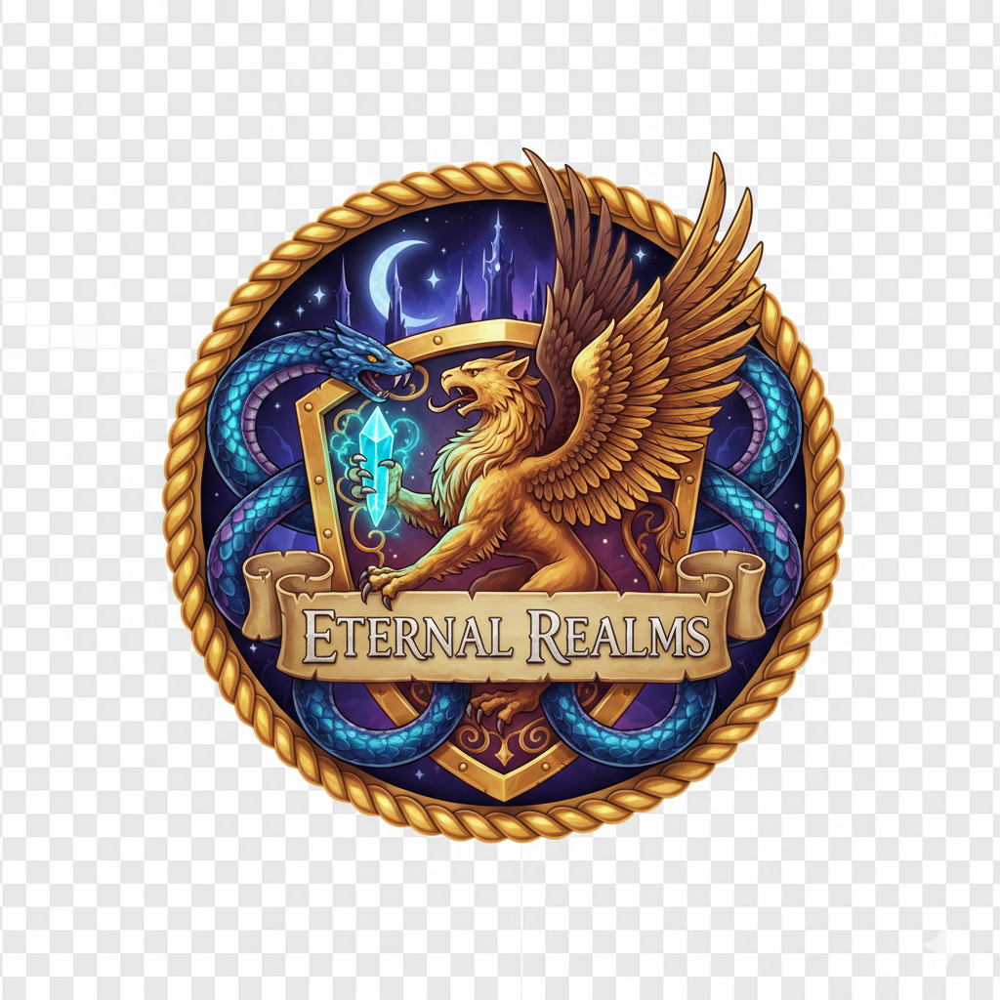

Bienvenido a Eternal Realms MMORPG
Sumérgete en un vasto mundo de fantasía en este MMORPG masivo donde miles de jugadores exploran reinos infinitos, forman alianzas poderosas, luchan contra dragones legendarios y compiten en arenas PvP. Crea tu personaje, une fuerzas con amigos en guilds épicas y forja tu leyenda en Eternal Realms.
Aprende más sobre el juego o ve la galería de imágenes y videos.
Características Destacadas
Mundo Abierto Infinito
Explora continentes vastos con biomas únicos, desde bosques encantados hasta desiertos áridos. Descubre secretos ocultos y enfrenta desafíos impredecibles.
Guilds y Comunidad
Únete a guilds poderosas, participa en guerras territoriales y construye alianzas que cambian el curso de la historia del juego.
PvP Épico
Compite en arenas intensas, batallas campales y duelos legendarios. Sube en los rankings globales y gana recompensas exclusivas.
Crafting y Economía
Crea ítems únicos, administra tu fortuna y participa en un mercado dinámico impulsado por los jugadores.